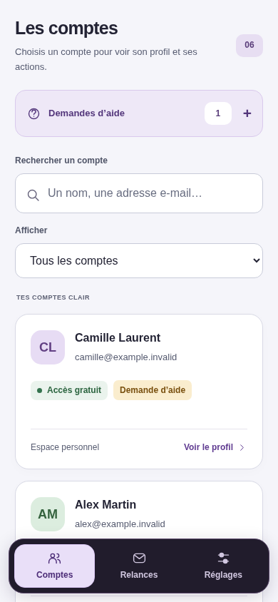
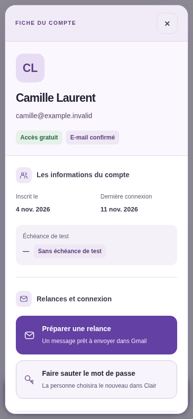

A
RecommandéeVerre doux Administration
La continuité de CLAIR : lumineuse, chaleureuse et plus compacte.
Essayer en plein écran- Liste utile, en trois lignes.
- Actions courantes accessibles dans la fiche.
- Accès sensibles regroupés et expliqués.
MASTERBOARD, NOUVELLE PRÉSENTATION
Deux directions pour retrouver les comptes, traiter les demandes et comprendre chaque action. À valider avant toute intégration.
La continuité de CLAIR : lumineuse, chaleureuse et plus compacte.
Essayer en plein écranLe support d’abord : priorités visibles, présentation plus structurée.
Essayer en plein écranInterface actuelle reproduite avec des données fictives, pour comparer les espacements et la fiche.

